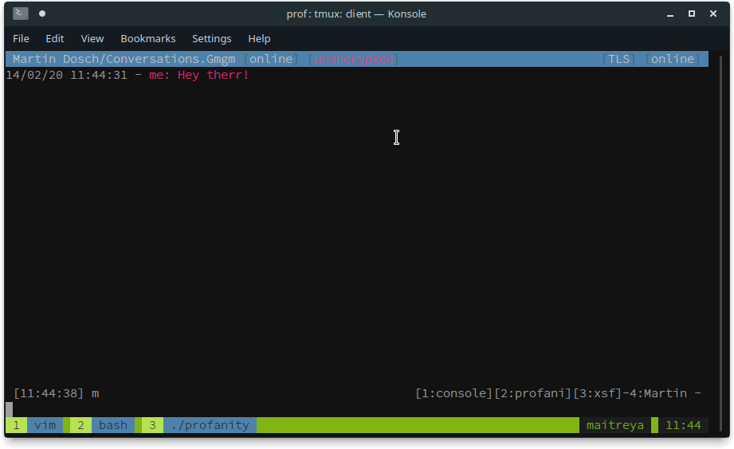
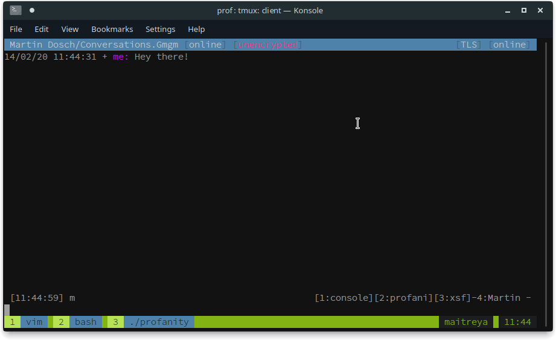

"Last Message Correction"
- jubalhFrom 10th to 14th February 2020 we had Hackweek 19 at SUSE. Part of that time I used to finally implement the long (since 2016!) sought after Last Message Correction feature, aka XEP-0308.
See my Hackweek project and the corresponding pull request.
Usage
To enable incoming and outgoing corrections users need to enable it with /correction on, see /help correction for more details.
Now we write a message to a friend /msg Martin Hey therr!.
Ouch! Already a typo.
Let’s make this right: /corr<TAB> <TAB> will autocomplete to /correct Hey therr! which then can easily be fixed and re-send.


Details
The feature is only available in the development version of Profanity. In the master branch on git. So it’s not yet ready for release.
Master branch corresponds always to our development and doesn’t guarantee anything. It’s where we develop test and experiment. We write these blogposts from time to time to inform our users and sponsors about what we are currently working on.
The LMC feature is in there. But for the correct behaviour we need to rewrite the UI code. We could hack a ‘from’ field in but we want to think more carefully how to implement it nicely. For this reason in the current state we don’t check the ‘from’ attribute of the sender. Because at the time of drawing so far we don’t have this information.
Since LMC is off by default noone is at harm. But people who choose to enable it need to be aware that in theory it would be possible for other users to send special messages where they could “correct” a message of someone else. We think the damage and likeliness from this is quite low. And once again, this is only in our development version of Profanity.
Done!
Today, on 2020-03-09, we were able to finish LMC properly. So if you use master from a23d4e4af7c10f6762577940a12983903bf4428d you are good.